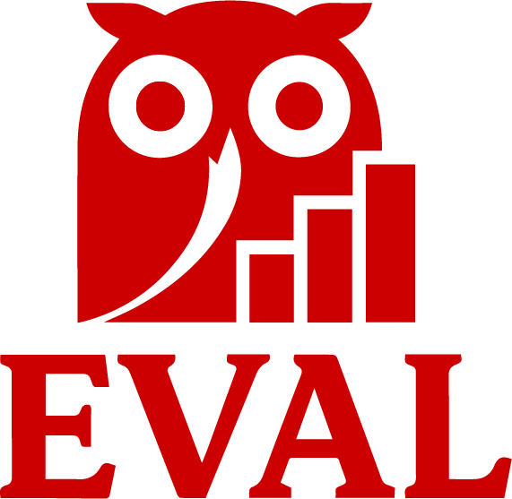
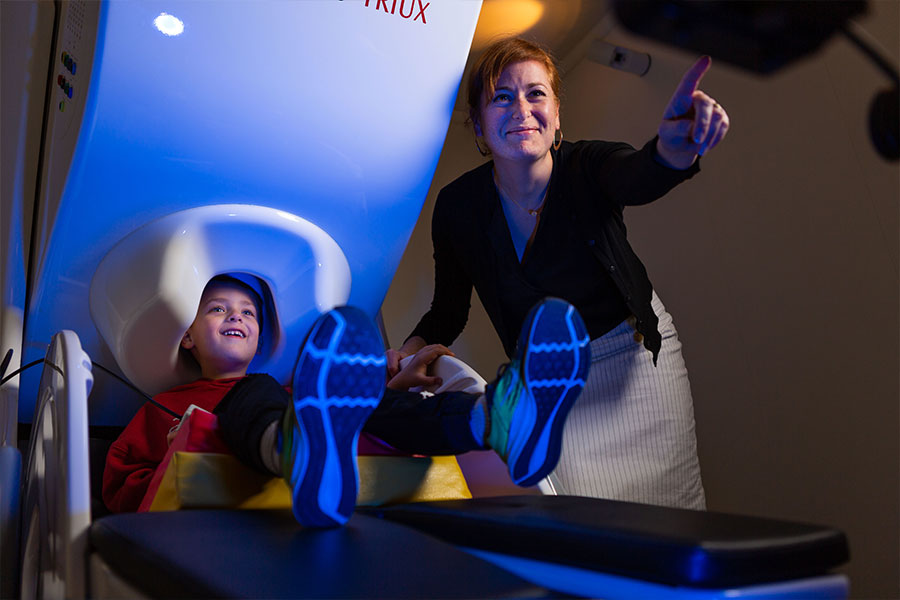

Research Scientist, MIT McGovern Institute for Brain Research
Research Assistant Professor, Boston University Wheelock College
Founder & Director, EVAL Initiative
I am a cognitive neuroscientist, Research Assistant Professor at Boston University and Associate Director of Translational Research in the AI and Education Initiative at Wheelock College of Education & Human Development and the Hariri Institute for Computing, and a Research Scientist at MIT's McGovern Institute for Brain Research. I direct the Evidence-Based AI in Learning (EVAL) Collaborative, which builds partnerships among researchers, schools, and technology developers to generate actionable evidence on AI tools through rigorous, independent evaluation.
My research investigates the neurocognitive foundations of language and literacy, how these systems develop and diverge in dyslexia, and how this knowledge can inform early identification, instruction, and intervention. This work spans precision neuroimaging, scalable AI tutoring, and innovative clinical trial designs for educational technology, and has appeared in leading journals including Nature Communications, NeuroImage, and Developmental Science. I am a recipient of the International Dyslexia Association Early Career Award and serve as President of NERDY (New England Research on Dyslexia) and as Associate Editor of Scientific Studies of Reading.
I am committed to translating research into practice and policy. I contribute to literacy policy at the local, state, and national levels, advocating for evidence-based instruction in schools and working to ensure that educational technologies are held to the same rigorous standards we expect of other interventions that affect children's lives.

Leading the EVAL Collaborative, which conducts rigorous, independent research to evaluate AI tools' impact on student learning outcomes. Fewer than 10% of AI tools in K-12 education have undergone independent validation. EVAL combines multidisciplinary expertise in education, cognitive science, computer science, and implementation research to conduct gold-standard efficacy studies, maintaining complete methodological independence and guaranteeing publication of all results regardless of outcomes. The collaborative also runs the EVAL AI in Learning Challenge, where companies win a rigorous and innovative RCT evaluating their K-12 AI learning tools.

Investigating the neurocognitive mechanisms underlying oral language development and their role in reading and comprehension outcomes in children with developmental dyslexia. Using precision fMRI, we demonstrated that the language network exhibits adult-like left-hemispheric lateralization by age 4, challenging the long-held progressive lateralization hypothesis. This work integrates behavioral and neuroimaging approaches to characterize how domain-specific speech perception deficits and statistical learning mechanisms contribute to literacy development.
Ozernov-Palchik, O.*, O'Brien, A. M.* et al. (In Press). Precision fMRI reveals that the language network exhibits adult-like left-hemispheric lateralization by 4 years of age. Nature Communications.
Ozernov-Palchik, O. et al. (2022). Speech-specific perceptual adaptation deficits in children and adults with dyslexia. Journal of Experimental Psychology: General, 151(7), 1556.
Ozernov-Palchik, O. et al. (2021). Distinct neural substrates of individual differences in components of reading comprehension in adults with or without dyslexia. NeuroImage, 226, 117570.
Ozernov-Palchik, O.*, Qi, Z. et al. (2023). Procedural and statistical learning in individuals with dyslexia. Neuropsychologia, 188, 108638.
Ozernov-Palchik, O., Sury, D. et al. (2023). Longitudinal changes in brain activation underlying reading fluency. Human Brain Mapping, 44(1), 18-34.
Developing novel approaches to randomized controlled trials for AI-based education technologies in K-12 that can efficiently identify causal relationships between features of educational tools, student characteristics, and learning outcomes. The goal is to design studies that are responsive to the pace of innovation while remaining maximally informative about what works, for whom, and under what conditions. This work involves collaboration with faculty in computer science, public health, and public policy.
Comparing highly scalable approaches to reading intervention, including fully online cross-age peer tutoring and AI-based tutoring systems. This research examines how different models can expand access to effective literacy support while maintaining instructional quality and measurable impact, including a Bayesian-designed 3-arm RCT evaluating the Amira AI reading tutor against human tutoring for 1st-2nd graders.
Olson, H.* & Ozernov-Palchik, O.* et al. (In Press). Improvements on proximal vocabulary measures in response to a remote randomized controlled trial audiobook intervention. Developmental Science. OSF
KIVA is an open-source, web-based, avatar-driven, multimodal AI reading companion for students with language-based disorders (e.g., dyslexia), multilingual learners, and those from disadvantaged backgrounds. It uses child-optimized speech recognition and an empirically evaluated agentic tutoring system to deliver interactive read-alouds with explicit vocabulary instruction and adaptive scaffolding. Grounded in a prior randomized controlled trial of human tutoring, KIVA's instructional design was validated through preregistered benchmarking in which AI-generated tutoring responses were rated higher than human responses on instructional quality, engagement, and responsiveness under blinded conditions. The platform logs comprehensive learning and engagement data and generates actionable reports for educators. Try KIVA | GitHub | Demo Video
Developing AI methods to automatically quantify and evaluate pedagogical moves in naturalistic tutoring interactions. Conducted in collaboration with the National Tutoring Observatory, this work aims to characterize how instructional practices influence learning and how effective teaching strategies can be identified and scaled using multidimensional modeling and feature analysis of human and AI tutoring sessions.
Ozernov-Palchik, O., Catania, F., Gabrieli, J. D. E., & Ghosh, S. (In Preparation). Large language models deliver superior pedagogical feedback yet are penalized by source-based evaluation bias.
Investigating whether advances in machine learning and automatic speech recognition can enable more precise prediction of student learning outcomes and risk trajectories. This work explores how child speech and language signals can support earlier identification of learning needs and more personalized educational support. Conducted in collaboration with MIT and Florida State University as part of a Chan Zuckerberg Initiative-supported effort.
Zhongkai, S. et al. (incl. Ozernov-Palchik, O.) (2024). Scalable early childhood reading performance prediction: Feasibility and challenges. NeurIPS. arXiv | DrivenData Competition
Examining how students who are often underrepresented in education technology research, including unhoused youth, incarcerated students, and immigrant learners, perceive and use generative AI tools. The goal is to understand how AI technologies are adopted, adapted, and experienced by students who are frequently excluded from technology design and research. In development with Boston Public Schools and Washington University.